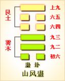

<!DOCTYPE html PUBLIC "-//W3C//DTD XHTML 1.0 Transitional//EN" "http://www.w3.org/TR/xhtml1/DTD/xhtml1-transitional.dtd">

<html xmlns="http://www.w3.org/1999/xhtml">
<head>
<meta content="text/html; charset=utf-8" http-equiv="Content-Type"/>
<title>周易第十八卦：蛊�?山风�?艮上巽下原文解释翻译-周易-国学�?/title>
<meta content="周易,蛊卦,山风�?艮上巽下" name="keywords"/>
<meta content="周易,蛊卦,山风�?艮上巽下，周易第十八卦：蛊卦 山风�?艮上巽下解释翻译�?（山风蛊）艮上巽�?《蛊》：元亨。利涉大川，先甲三日，后甲三日�?初六，干父之蛊，有子，考无咎。厉，终吉�?九二，干母之蛊，不可贞�?九三：干父小有晦，无大咎�?六四�? name="description"/>
<link href="css.css" media="screen" rel="stylesheet" type="text/css"/>
</head>
<body>
<div class="gxlayout">
</div>
<div class="gxlayout">
<div class="ihead">
<div class="title"><a>周易</a></div>
<ul class="more fl">
<li>当前位置:<a>国学梦首�?/a> &gt; <a>国学经典</a> &gt; <a>经部</a> &gt; <a>四书五经</a> &gt; <a>周易</a> &gt;  周易第十八卦：蛊�?山风�?艮上巽下原文解释翻译</li>
</ul>
</div>
<div class="gxbl fl">
<div class="latitle">

<h1>周易第十八卦：蛊�?山风�?艮上巽下</h1>
<div class="lainfo"><span>作者：佚名</span> <span>全集�?a>周易</a></span> <span>来源：网�?/span> <span>[<a rel="nofollow" target="_blank">挑错/完善</a>]</span></div>
</div>
<div class="lacontent">
<div class="clearfix"></div>
<!--<!-- allowfullscreen="" frameborder="0" height="36" src="http://www.ximalaya.com/swf/sound/yellow.swf?id=1382581&amp;auto=true" width="260"></iframe>-->
<p style="text-align:center"></p>
<p style="text-align:center"><a>周易第十八卦详解</a></p>
<p style="text-align:center"><a>第十八卦初六爻详�?/a>　<a>第十八卦九二爻详�?/a>　<a>第十八卦九三爻详�?/a></p>
<p style="text-align:center"><a>第十八卦六四爻详�?/a>　<a>第十八卦六五爻详�?/a>　<a>第十八卦上九爻详�?/a></p>
<p><strong><a target="_blank">周易</a>第十八卦 �?山风�?艮上巽下</strong></p>
<p>蛊：元亨，利涉大川。先甲三日，后甲三日�?/p>
<p>彖曰：蛊，刚上而柔下，巽而止，蛊。蛊，元亨，而天下治也。利涉大川，往有事也。先甲三日，后甲三日，终则有始，天行也�?/p>
<p>象曰：山下有风，�?君子以振民育德�?/p>
<p>初六：干父之蛊，有子，考无咎，厉终吉。象 曰：干父之蛊，意承考也�?/p>
<p>九二：干母之蛊，不可贞。象曰：干母之蛊，得中道也�?/p>
<p>九三：干父小有晦，无大咎。象曰：干父之蛊，终无咎也�?/p>
<p>六四：裕父之蛊，往见吝。象曰：裕父之蛊，往未得也�?/p>
<p>六五：干父之蛊，用誉。象曰：干父之蛊;承以德也�?/p>
<p>上九：不事王侯，高尚其事。象曰：不事王侯，志可则也�?/p>
<p><strong><a href="18_蛊卦.html" target="_blank">蛊卦</a>卦象，山风蛊卦的象征意义</strong></p>
<p>山风蛊，是异卦相叠而成，上卦为艮，上卦为巽。上艮为山，下巽为风，风向山上吹，草木果实散乱，是开始衰败的景象。下卦巽又为从，上卦艮为止，在下者屈顺，在上者停滞，必然就会腐败，所以此卦为蛊卦�?/p>
<p>关于山风蛊，据说在古代时把许多毒虫放在一个瓶子里，毒虫在里面发生争斗，互相吞食，经过一番拼杀，总有一只最强的虫子剩了下来，这条不死的虫子就叫作“蛊”。由此可见，蛊是毒虫中的强者，毒性更大，甚至说是毒到了极点。在<a target="_blank">易经</a>的卦之中，则是指这个卦很糟，坏到了极点�?/p>
<p>从卦象上看，艮为山，性刚，在上。巽为风，性柔，在下。这就像一座坚固高大的房子建在了柔软的地基上，是非常危险的，随时都可能倒塌。艮为山，含有止的意思，巽为风，含有顺从的意思，上止下顺从，事物肯定就会停止发展，结果会很糟�?/p>
<p>本卦中的“蛊”是事，即“有事了”、有“麻烦了”的意思。这里是以腐败来比拟人事，指风云际会之时，也正是英雄用武之际，应以自新的精神来应对�?/p>
<p>蛊卦除了揭示人们将陷入麻烦之中，还告诉了人们如何解决麻烦的方�?自新、自省、自察。这样做，会减少麻烦的出现，能把麻烦扼杀在萌芽之</p>
<p>蛊卦位于<a href="17_随卦.html" target="_blank">随卦</a>之后，《序卦》这样说道：“以喜随人者必有事，故受之以蛊。”在此上�?a href="16_豫卦.html" target="_blank">豫卦</a>与随卦，亦即愉悦而随从别人，形成某些弊端，需要整顿修</p>
<p>《象》曰：山下有风，�?君子以振民育德。《象》解释蛊卦的卦象，认为巽(�?下艮(�?上，为山下起大风之表象，象征救弊治乱、拨乱反正。这时候，君子救济人民，培育美德，纠正时弊�?/p>
<p>蛊卦启示了振疲起衰的道理，属于中中卦。《象》中断此卦：卦中爻象如推磨，顺当为福反为祸，心中有益且迟迟，凡事尽从忙处错�?/p>
<p>山风蛊卦名为蛊。《说文》中说：“蛊，腹中虫也。”也就是说“蛊”的本义是指人肚子里的虫子。现在我们知道，人肚子会有寄生虫，可是《说文》中的“腹中虫”却不单指寄生虫，还指人吃下的虫子跑到了肚子里。远古时代有些人会一种巫术。他们将一百种有剧毒的虫子放到一个坛子里，然后把坛口封住埋在地下。若干年后，坛子里的毒虫互相攻击，最后只剩下一条最毒的虫子，这条虫子便叫“蛊”。这条虫子可太厉害了。谁要是被这条虫子咬伤，必死无疑。谁要是不小心把这条虫子吃了，后果更是不堪设想。并且，这条虫子不单可以使人死亡，还可以迷乱人的心志，使被蛊者完全听从干“蛊”的主人的安排。这个“蛊”可以使人毫无察觉地受到伤害，所以这个“蛊”字，不但有寄生、腐败的含义，还有诱惑、迷乱、淫邪等含义。前面从<a href="13_同人�?html" target="_blank">同人�?/a>开始到随卦，讲的都是和平富足的社会现象。到了随卦，众望所归，社会更加富足。可是正是由干富足，人们开始更多地追求享乐，于是便暴露出一种危害。这种危害便是腐败与淫邪。这种现象是逐渐形成的，人们毫无察觉，可是它的害处却相当大，就像人们被养毒虫的主人蛊了一样。所以豫卦之后便是蛊卦�?/p>
<p>蛊卦的卦<a target="_blank">�?/a>是三个阴爻三个阳爻，随卦的所有阳爻变为阴爻，所有阴爻变为阳交，便形成了蛊卦。可见《周易》中的蛊卦与随卦是有一定联系的�?/p>
<p><strong>山风蛊从卦象上分析，蛊卦言害义之象�?/strong></p>
<p>上卦为艮为山为少男，下卦为巽为风为长女，山下有风便是蛊卦的卦象。少男与长女处在一起，是女蛊男的形象，所以此卦也有男女淫欲过度的含义。风在山下刮，怎么会与“蛊”有相同的含义呢?原来，古人观察到，风可以吹走沙尘，一座山，被风成年累月地吹走沙尘，最终会使大山变为平地。可是刮风时人们丝毫不会感觉到风对大山的威胁，可是经过许多许多年以后，一座山没了，哪里去�?古人通过研究发现是被风给分解了，被风给吹走了。所以这风太厉害了，就像“蛊”一样。而古文中的“风”，兼有“男女相合”之意，所以“山下有风”可谓是一语双关，比喻得极其微妙�?/p>
<p>关键词：周易,蛊卦,山风�?艮上巽下</p>
<div class="clearfix"></div>
<div class="title"><div class="thot">解释翻译</div><span>[挑错/完善]</span></div><p><a href="18_蛊卦.html" target="_blank">蛊卦</a>：大吉大利。有利于渡过大江大河。在甲日前三天的辛日和甲日后三天的丁日出发�?/p>
<p>初六：能继承父亲的事业，就是孝顺的儿子。没有灾难，虽有危险，结果还是吉利�?/p>
<p>九二：继�?a target="_blank">母亲</a>的事业，吉凶无法占问�?/p>
<p>九三：继承父亲的事业，虽有小过错，但没有大灾祸�?/p>
<p>六四：发扬光大父亲的事业，实行起来会有困难�?/p>
<p>六五：继承父亲的事业，得到了赞誉�?/p>
<p>上九：不为国君公侯服务，一心看重继承父业�?/p>
<div class="title"><div class="thot">注释出处</div><span>[请记住我�?国学�?www.guoxuemeng.com]</span></div><p>①蛊(gu)是本卦标题。蛊的意思是“事”。全卦的内容主要讲儿子继承父业的事。由于蛊是全卦中的多见词，所以用它来作标题�?/p>
<p>②先甲三日， 后甲三日：这是占问日期。古人记录时间的方法�?每年十二个月，每个月分三旬，每旬为十天，这十天依次用甲、乙、丙、丁、戊、己、庚、辛、壬�?癸十个字表示。按照这种方法，先甲三日就是辛日，后甲三日就是丁目�?/p>
<p>③干：用作“贯”，意思是继承，这里指继承父业�?/p>
<p>④考：用作“孝”， 子考就是儿子孝顺�?/p>
<p>⑤裕：发扬光大�?/p>
<p>(6)吝：艰难�?/p>
<p>(7)用誉：得到赞誉�?/p>
<div class="clearfix"></div>
<div class="contextdhall clearfix">
<ul>
<li>上一篇：<a href="17_随卦.html">周易第十七卦：随�?泽雷�?兑上震下</a> </li>
<li>下一篇：<a href="19_临卦.html">周易第十九卦：临�?地泽�?坤上兑下</a> </li>
<li>全   文�?a>周易</a></li>
</ul>
</div>
</div>
<div class="clearfix mt20"></div>
</div>
</div>
<div class="clearfix mt20"></div>
<div class="gxlayout">
</div>
<script>
var _hmt = _hmt || [];
(function() {
  var hm = document.createElement("script");
  hm.src = "https://hm.baidu.com/hm.js?872034ded637616c5cf8e173a446bb0e";
  var s = document.getElementsByTagName("script")[0];
  s.parentNode.insertBefore(hm, s);
})();
</script>
</body>
</html>
